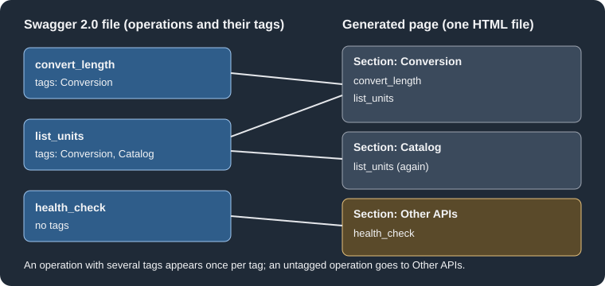

REST API Docs
|
This content was generated with the assistance of AI and should be verified against the official documentation before being relied on in production. |
This page was written against DocFX 2.81.0 (the latest release, published on 2026-09-25) and checked on 2026-10-26.
The examples were run with DocFX 2.81.0 installed as a .NET tool inside the mcr.microsoft.com/dotnet/sdk:10.0 Docker
image, so the listings show real output. DocFX is community-maintained under the .NET Foundation; see
the DocFX overview for governance. The .NET side of the same site is covered
in .NET API Docs; this page is about HTTP APIs described by a
Swagger file.
What DocFX does with REST APIs, and why
Besides .NET reference pages, DocFX can render the reference of an HTTP API from its machine-readable description. The
official page states that DocFX generates REST API documentation from Swagger 2.0 files, and it names no other format.
The idea is the same as for .NET code: the description lives next to the service, is the single source of truth, and the
reference page is regenerated on every build instead of being written by hand. Unlike the .NET stage there is no
metadata step: a Swagger file is already structured data, so it goes straight into docfx build as content.
Each Swagger file produces one output HTML file. The processor that handles these files is reported in the build log as
RestApiDocumentProcessor, and the manifest.json written to the output folder lists the page with the type
RestApi.
Adding Swagger files to the build
Include the files in the build.content mapping of docfx.json. The official example uses the pattern
**/*.swagger.json. The official page documents only this naming convention, so keep the descriptions under it (see the OpenAPI 3 section
below for what happens with other content). The mapping works like
any other content mapping; the docfx.json page describes files,
src, exclude and dest.
{
"build": {
"content": [
{ "files": ["rest/*.swagger.json", "rest/toc.yml", "toc.yml", "index.md"] }
],
"output": "_site",
"template": ["default", "modern"]
}
}Source: DocFX docs: REST API docs
The template list is the normal default plus modern combination, which selects the modern look; REST pages are
rendered by both templates.
A Swagger 2.0 file for Pocket Units
Pocket Units is the tiny units-conversion library used across this section. To document it as a service, imagine a thin
HTTP front end with two endpoints: one converts a length, one lists the supported units, plus a health probe. The file
below describes it. The Conversion tag sets x-bookmark-id, the Catalog tag does not, list_units is attached to
both tags, and health_check has no tag at all. The host name is a placeholder.
{
"swagger": "2.0",
"info": {
"title": "Pocket Units Service",
"description": "HTTP front end for the Pocket Units conversion library.",
"version": "1.0.0"
},
"host": "units.example.com",
"basePath": "/api/v1",
"schemes": ["https"],
"consumes": ["application/json"],
"produces": ["application/json"],
"tags": [
{ "name": "Conversion", "x-bookmark-id": "conversion", "description": "Convert lengths between units." },
{ "name": "Catalog", "description": "List the supported units." }
],
"paths": {
"/convert": {
"get": {
"operationId": "convert_length",
"summary": "Convert a length",
"tags": ["Conversion"],
"parameters": [
{ "name": "value", "in": "query", "required": true, "type": "number", "description": "Amount to convert." },
{ "name": "from", "in": "query", "required": true, "type": "string", "enum": ["Metre", "Kilometre", "Mile"] },
{ "name": "to", "in": "query", "required": true, "type": "string", "enum": ["Metre", "Kilometre", "Mile"] }
],
"responses": {
"200": { "description": "Converted value.", "schema": { "$ref": "#/definitions/Conversion" } },
"400": { "description": "Unknown unit." }
}
}
},
"/units": {
"get": {
"operationId": "list_units",
"summary": "List units",
"tags": ["Conversion", "Catalog"],
"responses": {
"200": { "description": "Supported units.", "schema": { "type": "array", "items": { "type": "string" } } }
}
}
},
"/health": {
"get": {
"operationId": "health_check",
"summary": "Liveness probe",
"responses": { "200": { "description": "Service is up." } }
}
}
},
"definitions": {
"Conversion": {
"type": "object",
"properties": {
"value": { "type": "number", "description": "Converted amount." },
"unit": { "type": "string" }
}
}
}
}Source: DocFX docs: REST API docs
Wiring the table of contents
A Swagger file does not appear in the navigation by itself. Add it to a toc.yml as an ordinary item whose href points
at the file, and include that toc.yml in the build content (the file mapping above lists rest/toc.yml). The
Table of Contents page covers all keys.
- name: Pocket Units Service
href: pocket-units.swagger.json- name: Home
href: index.md
- name: REST API
href: rest/Source: DocFX docs: Table of Contents
If rest/toc.yml is missing from the content mapping, the build still succeeds but warns that it cannot find a toc.yml
inside rest/, and the page has no sidebar entry.
Running the build
docfx docfx.jsonOutput of the run (the first two lines come from the plug-in loader):
7 plug-in(s) loaded.
Building 1 file(s) in RestApiDocumentProcessor(BuildRestApiDocument=>ValidateRestApiDocumentMetadata=>ApplyOverwriteDocumentForRestApi)...
Building 1 file(s) in TocDocumentProcessor(BuildTocDocument)...
Building 1 file(s) in ConceptualDocumentProcessor(BuildConceptualDocument=>ValidateConceptualDocumentMetadata)...
Applying templates to 3 model(s)...
XRef map exported.
Build succeeded.
0 warning(s)
0 error(s)Source: DocFX docs: CLI reference
The result is _site/rest/pocket-units.html, next to _site/rest/toc.html and _site/rest/toc.json. The file name
comes from the Swagger file name with .swagger.json replaced by .html.
What the generated page contains
For the file above, the rendered article starts with the title from info.title and then shows, in this order, one
section per tag (here in the order the tags are declared), then an Other APIs section, then Definitions. Each
operation shows its operationId as the heading, its summary, a request line such as GET /convert?value&from&to,
a parameter table (required parameters are marked with an asterisk) and a response table with the status code, the type
(the $ref target, here Conversion) and the description. The entries under Definitions list the properties of every
model with their types and descriptions. The query-parameter names appear in the request line without values.
Organising operations with tags
Operations are organised with Swagger tags. A tag is declared once in the top-level tags array (name and description)
and referenced by name in the tags array of an operation. Two rules from the official page, both visible in the run above:
-
An operation can have several tags and then appears once under each of them (
list_unitsshows up under bothConversionandCatalog). -
An operation without tags goes to the section named Other APIs (the official page spells it "Other apis"; the rendered heading, with the id
other-apis, reads Other APIs).

The figure shows how the three operations of the example are distributed: the expected layout, which matches the
rendered page, is Conversion with convert_length and list_units, Catalog with list_units, and Other APIs with
health_check.
The x-bookmark-id extension
The official page says that the vendor extension x-bookmark-id on a tag object "specifies the URL fragment for the
tag". It is a Swagger vendor extension, so any other tool reading the file ignores it. In the run above the extension
reached DocFX’s model: the raw model exported with --exportRawModel (see
Templates and Customization) contains the entry
an htmlId property with the value conversion for the Conversion tag and the value Catalog for the tag without the
extension, so the tag name is used when no bookmark is given.
However, the headings in the HTML produced by the bundled default and modern templates of 2.81.0 did not use that
value. In both builds the tag heading was <h2 id="units_example_com_api_v1_Pocket_Units_Service_1_0_0_tag_Conversion">
and no element had the id conversion. A link such as rest/pocket-units.html#conversion therefore did not reach the
tag section in this test. The official documentation does not explain how the fragment is meant to be used, and a custom
template can read htmlId from the model, so treat the extension as available data for custom templates rather than as
a guaranteed anchor and check the generated HTML before publishing links that depend on it.
Cross-referencing REST pages and operations
Every REST page, tag and operation is registered in _site/xrefmap.yml, so Markdown articles can link to them with
the xref syntax described in Links and Cross
References. The UIDs are built from the host, the base path, the title and the version of the Swagger file, and the
generated anchors replace punctuation with underscores. The entries of the example file, taken from the real map:
### YamlMime:XRefMap
sorted: true
references:
- uid: units.example.com/api/v1/Pocket Units Service/1.0.0
name: Pocket Units Service
href: rest/pocket-units.html
- uid: units.example.com/api/v1/Pocket Units Service/1.0.0/convert_length
name: convert_length
href: rest/pocket-units.html#units_example_com_api_v1_Pocket_Units_Service_1_0_0_convert_length
- uid: units.example.com/api/v1/Pocket Units Service/1.0.0/tag/Conversion
name: Conversion
href: rest/pocket-units.html#units_example_com_api_v1_Pocket_Units_Service_1_0_0_tag_ConversionThe excerpt is real output; the map also holds health_check, list_units and the Catalog tag (the list above is abridged). The UIDs contain
spaces whenever the title does, which makes them awkward to write in a link; a title without spaces is easier to
reference. This page did not test writing such links in an article. Because the host and version are part of the UID, bumping info.version changes every UID and breaks the links that
spelled the old one.
OpenAPI 3 files
Swagger 2.0 is the predecessor of the OpenAPI Specification; version 3 changed the document layout (openapi: 3.x
instead of a swagger property with the value 2.0, servers instead of host, basePath and schemes, requestBody
and components instead of body parameters and definitions). The official DocFX page does not mention OpenAPI 3, so support for it is
outside the official documentation. What was observed with 2.81.0:
-
A file named
*.openapi.jsonmatched by the content mapping produced no page, and atoc.ymlthat pointed to it produced warnings of the formUnable to find file ... for Href referenced by TOC file. -
An OpenAPI 3 document saved under the name
pocket-units.swagger.jsonis not rendered either. With no TOC pointing at it, the build reportswarning: UnknownContentType: Unable to handle following files: rest/pocket-units.swagger.jsonand the page is not produced.
A practical approach is therefore to keep the Swagger 2.0 description as the file given to DocFX. If the service
publishes only OpenAPI 3, a separate step in the pipeline can convert it to Swagger 2.0 before docfx build, or the
reference can be generated by a tool that does support OpenAPI 3 (for example the OpenAPI plugin used with Docusaurus,
see the Docusaurus section). Conversion between the two versions can
lose features that have no Swagger 2.0 counterpart. No converter was run for
this page, so the quality of any particular conversion was not tested here.
Pitfalls and version notes
-
Swagger 2.0 only: DocFX 2.81.0 does not build OpenAPI 3 files, and the failure is a skipped file, not a clear error.
-
Name files
*.swagger.jsonand include them (and theirtoc.yml) inbuild.content; a pattern that does not match produces no page and no REST-specific message. -
x-bookmark-idis present in the model but did not change the heading ids of the bundled templates in 2.81.0. -
Operations without
operationIdwere not tested; give every operation an id, because the id is the heading and part of the cross-reference UID. -
Writing the service host into the file makes it part of every UID; use a stable placeholder or the production host and keep it unchanged between releases.